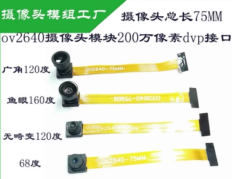
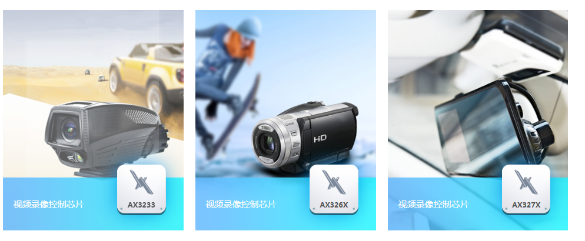
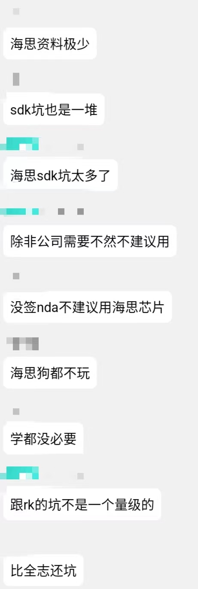
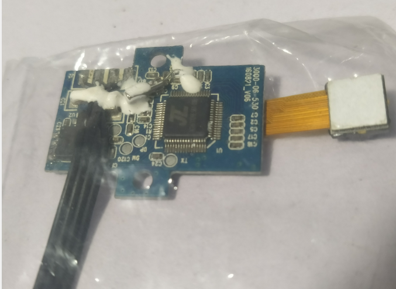

小型摄像机解决方案调研
本文最后更新于 2024年2月3日 中午
小型摄像机解决方案调研
一直想自己做一台相机记录生活，这也是我四年前学电子的初衷。
现在回想起来，年轻真好，有什么想做的就去做，一切do it yourself，纯洁真好。
我这人太恋旧了啊，照片不舍得删，东西不舍得扔，想要记录生活的一切。
好了，说正事
这几年来我这一个都不算是电子行业从业者的人一直在调研小型摄像机各种芯片解决方案。
爱好者级摄像头模组
先抄一段来自camera-module.com的显示分辨率格式，厂商们总是喜欢用这个描述，还要查表，直接贴到这里好了
Description Code Resolution *(Color Graphics Adapter) CGA 320 x 200 *(Enhanced Graphics Adapter) EGA 640 x 350 (Video Graphics Array) VGA 640 x 480 (Super Video Graphics Array) SVGA 800 x 600 (High Definition Television 720i/p) HDTV 1280 x 720 (Extended Graphics Array) XGA 1024 x 768 (Wide Extended Graphics Array) WXGA 1366 x 768 (Super Extended Graphics Array) SXGA 1280 x 1024 (Super Extended Graphics Array+) SXGA+ 1400 x 1050 (Wide Super Extended Graphics Array) WSXGA 1600 x 1024 (Wide Super Extended Graphics Array+) WSXGA+ 1680 x 1050 (High Definition Television 1080i/p) HDTV 1920 x 1080 (Ultra Extended Graphics Array) UXGA 1600 x 1200 (Wide Ultra Extended Graphics Array) WUXGA 1920 x 1200 (Quad Extended Graphics Array) QXGA 2048 x 1536 (Quad Super Extended Graphics Array) QSXGA 2560 x 2048 (Wide Quad Super Extended Graphics Array) WQSXGA 3200 x 2048 (Quad Ultra Extended Graphics Array) QUXGA 3200 x 2400 (Wide Quad Ultra Extended Graphics Array) WQUXGA 3840 x 2400 (Hex Super Extended Graphics Array) HSXGA 5120 x 4096 (Wide Hex Super Extended Graphics Array) WHSXGA 6400 x 4096 (Hex Ultra Extended Graphics Array) HUXGA 6400 x 4800 (Wide Hex Ultra Extended Graphics Array) WHUXGA 7680 x 4800
先科普下，索尼，OMNIVISION这些公司出货的视频传感器一般是这样的芯片：

像是OV2640就是四分之一英寸的传感器。
然后，再由摄像头模组厂做外壳排线接口镜片，包装成不同长度，不同角度的摄像头：
也许是DIY摄像头之类的人太少，除了玩单片机时最最最常用的OV7670，OV2640这种很热的型号，其它的型号的摄像头模组都很贵，广角的也比68度视角的贵很多，很多摄像头模组也买不到零售，连传感器都很难买到。
还有一些清晰度比较高的视频传感器的电路板直接贴视频传感器芯片，然后直接将镜片镜筒固定在主板或者外壳上，这种也是蛮不立于DIY的，不然又得采购镜片，研究光学成像，画镜筒模型……但是遗憾的是高分辨率很多都是这种。

民用级（准确来说是电子爱好者级）的DVP摄像头模组，可以选的不多，比较常用的有：
| 模组 | 性能 | 参考价格 | 备注 | 发布时间 |
|---|---|---|---|---|
| OV7670 | 640 x 480@30fps | 7元 | 2005 | |
| GC0308 | 640(H) x 480(V) | 8元 | ||
| OV9655 | 1280 x 1024 15fps VGA 30fps 说明：有卖家说能替代老旧的OV2640，疑似瞎说 | 6元 | 2005 | |
| OV2640 | 1600×1200@15fps SVGA@30fps CIF@60fps | 7元 | 支持JPEG | 2006 |
| OV3640 | 2048×1536@15fps 1024×768@30fps | 18元 | 支持JPEG | 2008 |
| OV3660 | 2048×1536@15fps 1080p@20fps 720p@45fps VGA@60fps QVGA@120fps | 16元 | 支持JPEG | 2011 |
| OV5640 | 5MP@15fps 1080p@30fps 720p@60fps VGA@90fps QVGA@120fps | 23元 | 支持JPEG | 2012 |
| OV5642 | 5MP@15fps 1080p@30fps 720p@60fps VGA@90fps QVGA@120fps | 34元 | 支持JPEG | 2008 |
注1：价格来自淘宝，2023年6月
注2：以上均为窄角度镜头，若广角镜头价格要增加不少
注3：参考：OV2640: Specs, Camera, Datasheet & Alternative (2022 Report) (arducam.com)
注4：以上CMOS模组都是比较老（上述网站说end-of-life）的，咱们作为电子爱好者，没办法了属于是
果然摄像头和单片机性能很挂钩啊，查OV7670一堆STM32模组，查OV2640的淘宝广告都是说支持ESP32，查3660说支持ESP32，K210，查5640都变成了荔枝派树莓派……
主控芯片
摄像头芯片一般若想低功耗价格便宜还能编码视频，一般通用MCU做不到的，基本要选用高性能MCU或者带视频编码硬件的才行。主控芯片其实有好几个很明显的分水岭，我按照清晰度对主控芯片分个类。是按照xP@15fps进行分类，其实这些都支持更高像素的拍照。
其实有好几个分区，720P是个门槛，1080P是个门槛，2K是个门槛。
720P以下的就是通用单片机，720P，1080P的是一些老产品或者低端产品，但基本上都是LQFP、QFN封装的小芯片，也是我的目标范围，2K4K8K的基本都是BGA封装，DDR3内存，甚至linux、安卓，不是穷逼能玩得起的了。表格按照低端到高端。
说明：因为大部分厂商都不开源，啥都查不到，有些话是自己的猜想，欢迎各位指正。
| 层级 | 芯片 | 资料情况 | 产品情况 | 个人购买 |
|---|---|---|---|---|
| 480P不及 | STM32(之类通用单片机)低端产品 | 很多 | 只能应用于拍照了 | 很多 |
| 720P | STM32(之类通用单片机)中高端产品 | 很多 | 性价比太低 | 很多 |
| 480P | ESP32 | 很多 | 只能应用于拍照了，视频不大行但听说能720P拍几帧 | 很多 |
| 720P | 杰理开源产品AC79 | 海星（海星） | 720P有点拉15FPS勉强，但支持WIFI | 能买到 |
| 720P，1080P，2K | 杰理闭源产品老DV系列 | 完全查不到一点资料 | 市场上应用很多销量很好，我所知道的产品不支持WIFI，需要模块 | 买不到 |
| 1080P，2K，4K | 杰理新闭源产品 | 完全没有，SDK收费几个W，找人开发也要几个W | 听说是市场新秀，行车记录仪市场占比很高 | 买不到 |
| 720P，1080P | 凌通老产品 | 网上可以下载SDK(少数型号)，可以搜到三篇使用博客。找不到详细的产品选型资料，具有产品GPCV1248，GPCV6624等，销量很大 | 15年左右行车记录仪应用、销量很大，见过实物卡录 | 淘宝少数店铺可购买 |
| 2K，4K | 凌通新产品 | 无 | 未知 | 买不到 |
| 720P | 建荣/卓荣 | 可以买到SDK，无了 | 见过实物卡录 | 买不到 |
| 1080P，2K，4K | 联咏 | 资料比较少 | 行车记录仪听说挺多 | 能买到 |
| 1080P，2K，4K，8K(linux) | 海思 | 少 | 执法记录仪之类的应用比较多 | 比较好买 |
| 1080P，2K，4K(linux) | 国科微 | 海思兼容替代 | 听说还行 | 好买 |
| 1080P，2K，4K，8K(linux) | 瑞芯微 | 资料还行 | 玩的人不少想必应用也多，搞机器视觉的不少 | 比较好买 |
| 1080P，2K，4K，8K(linux) | 全志 | 资料还行 | 应用比较多 | 好买 |
STM32等通用MCU
能查到资料很多，但是毕竟没有硬件编码模块，视频性能一般。
STM32F4听他们说新产品很少用了。其它高性能MCU同样的视频性能（无硬件支持）基本上价格也比专门的DV芯片贵。
ESP32(Espressif)
ESP32是一款物联网芯片，近几年以其规范的文档代码，开放的社区，便宜的芯片，丰富的外设，和WIFI蓝牙支持，成了开源界的大哥。ESP_CAM模块卖的超级好，资料也很全。更是以支持Arduino吸引了不少小白。但我个人非常不推荐Arduino，太难用了，自由度太低，很多接口的参数写死。
espressif/esp32-camera (github.com)
但是毕竟是240Mhz物联网MCU嘛，视频性能就有点差了，听说720P只能跑几帧的，还不带录音。
明年（2023）出的ESP32-P4可以期待一下，双核400Mhz，具有MIPI接口，H.264 编码支持，如果明年出了的话，将是对我来说最合适的芯片。
杰理(jieli)开源产品AC79

杰理不知道怎么了突然大发慈悲开源了几款芯片。杰理的开源芯片都用于视频录像的目前只有AC79，资料较为完备，有官方文档官方群，视频性能比较差劲，主要是VGA(640*480)清晰度，标称720p30fps，据说效果不好。价格10r/pcs。群里有工程师说，今年会推出视频性能更好的芯片。截止到2023年6月尚未发布。
杰理毕竟是长期的闭源厂，资料并不是很多，单片机经验少的话谨慎考虑。
AC79 SoC：USB1.1、USB2.0（可以方便的当做读卡器）双核DSP，最高主频320Mhz。支持JPEG编码，最大支持720P@30fps@AVI封装，支持WiFi蓝牙，支持视频传输，支持DVP-1/2/4/8bit、 BT656图像传感器接口的YUV sensor，最大支持720P分辨率，可以说应用层的例程还蛮多，这个产品官方给的示例有无人机图传啊，儿童相机之类，视频性能一般。
杰理 JieLi_AC79 开源项目文档 — JL Project Documentation (zh-jieli.com)
杰理(jieli)闭源产品
杰理是最近几年在蓝牙视频方面实力很强的公司，产品较为先进，进年来市场占有率增长极快。但是多数适用于行车记录仪的产品并不开源如杰理dv系列，dv15，dv16等，据悉有更新的产品，性能依旧不错，价格也比较好，但是全方位闭源，我见过的应用有卡录等，我也买到过杰理IC的卡录。
凌通(Generalplus)

网上可以下载SDK(少数型号)，可以搜到三篇使用博客。找不到详细的产品选型资料，具有产品GPCV1248，GPCV6624等
GPVC1248等明星产品发布时间较早，像素较低，功耗较大。新产品资料过少。
这是一个行车记录仪电路板。https://www.amobbs.com/thread-5694591-1-1.html
可以在淘宝(少数几个店铺)上买到几款芯片和开发版。
官网只显示少数几个型号，总体看来频率较低，网上有资料的老产品大多数较为落后(但是并不算落后)，新产品信息较少。网上可查到的产品均为LQFP封装，比如1248为LQFP128封装。

凌通官网说他最小48pin，我也见过凌通的48pin产品GPCV4225（拆解获得），但是查不到。官网就两本Datasheet。
他的开发板长这样：
最近因为项目需要，购买了这块凌通开发板进行开发，凌通这个平台是台湾创建的，所以在深圳那边的市场会比较大，核心技术基本上都掌握在凌通原厂以及一些台湾芯片供应商那里，往大陆里面更进一些估计就很少接触凌通这款芯片的开发设计，但是平时用的行车记录仪却很有可能是凌通产的，毕竟价格摆在那里，实现的功能也和市面上的差不多，下面是这款开发板硬件平台的介绍.
————————————————
版权声明：本文为CSDN博主「浮生若梦，学海无涯」的原创文章，遵循CC 4.0 BY-SA版权协议，转载请附上原文出处链接及本声明。
原文链接：https://blog.csdn.net/weixin_41586634/article/details/88741670

这是那三页博客，可谓弥足珍贵了，这位博主还贴心的给了SDK。
凌通DRV方案 ( 一、GPCV1248开发板主平台介绍 )_浮生若梦，学海无涯的博客-CSDN博客
凌通DRV方案 (二、GPCV1248芯片手册分析 )_凌通芯片_浮生若梦，学海无涯的博客-CSDN博客
凌通DRV方案 (三、固件的制作和烧录详解 )_浮生若梦，学海无涯的博客-CSDN博客
为了防止资料丢失，我还准备了网页备份：
[一、GPCV1248开发板主平台介绍](DVsolution/凌通DRV方案 ( 一、GPCV1248开发板主平台介绍 )_浮生若梦，学海无涯的博客-CSDN博客.mhtml)
[二、GPCV1248芯片手册分析](DVsolution/凌通DRV方案 (二、GPCV1248芯片手册分析 )_浮生若梦，学海无涯的博客-CSDN博客.mhtml)
[三、固件的制作和烧录详解](DVsolution/凌通DRV方案 (三、固件的制作和烧录详解 )_浮生若梦，学海无涯的博客-CSDN博客.mhtml)
建荣/卓荣(AppoTech)

是同一家公司，后来改名叫卓荣了，这个logo我也拆卡录拆到过
这三款产品的页面似乎都是复制粘贴，规格都是：


很久以前也查过他们家资料，这次居然发现网上（CSDN等）可以买到AX3233的SDK。去他妈CSDN。
除此之外查不到什么资料。
闲鱼上有一些废品卡录，大眼一看也是卓荣logo。
联咏(Novatek)
NT96650，NT96655，NT96663明星产品，也属于高端产品系列，配套索尼的传感器为主。
也是行车记录仪用的很多的方案。
资料比较少，可以查到SDK：nikitos1550/some_novatek_sdk (github.com)，淘宝上也有一些开发板但也挺少
海思(Hisilicon)
属于华为集团，中国大陆最大的无晶圆厂芯片设计公司，最近某些原因导致的缺货也影响到了摄像业务。海思毕竟是华为的，其产品也有执法记录仪应用，我猜国内海思芯片的比较多。（找了几个拆解视频，一个是安霸芯片，这个牌子也做行车记录仪，个人很难接触了，另一个直接上MTK了，打脸了）
执法记录仪，监控等设备应用广泛，前几年见到一个芯片代理发朋友圈，七十多片Hi芯片余货卖。主要针对1080p，4k等高端领域，几乎都是BGA封装。芯片价格较贵，几十元不等，常见产品有Hi3516DV300(主频900mhz)等IPcamera芯片，大多数需要搭配DDR3内存，网上资料全，sensor较贵，量产大概要直接用传感器芯片，自己做镜片部分。海思的移动相机也有方案，但是比较睾端。
海思的SDK也是半开放状态，但是想从官方那弄，没门

Hi3516DV300
双核 ARM Cortex-A7@ 900MHz，集成POR、 RTC、Audio Codec以及待机唤醒电路，H.264/H.265 编解码最大宽度 3072，最大分辨率 3072x1728，2688x1536@30fps编码+720x480@30fps编码（多码流），支持h.264/265/jpeg编码，三四十块钱，还支持一堆视频处理功能。
Hi3516EV200
后来在查国科微的时候查到海思一款Hi3516EV200
ARM Cortex A7@ 900MHz，H.264/H.265 编码可支持最大分辨率为 2304x1296，宽度最大 2304
H.264/H.265 多码流实时编码能力：
− 2048x1536@20fps+720x576@20fps
− 2304x1296@20fps+720x576@20fps
− 1920x1080@30fps+720x576@30fps
• 支持 JPEG 抓拍 3M（2304x1296）@5fps
支持MIPI、LVDS/Sub-LVDS、HiSPi接口
支持与SONY、ON、OmniVision、 Panasonic等主流高清CMOS sensor对接

这颗芯片有大佬做开发板，但是应该寄了，网站也挂了。
主要在whycan上有些讨论。海思入门级开发板Hi3516EV200 正式预售/ DOPI开源摄像头(HI3516/HI3518) / WhyCan Forum(哇酷开发者社区)
国科微(gokemicro)
有一些海思pin to pin兼容替代，如果GK7205RNCFV200，闲鱼淘宝价格在12元左右，有好几个海思的替换芯片
GK7205V200 12元闲鱼 PtP Hi3516EV200
GK7205V300 20多元 PtP Hi3516EV300
瑞芯微(Rockchip)
RV1109/1126/1108是瑞芯微比较经典的产品，新品有RK33XX，但是频率也上1GHz，也需要DDR3芯片，支持2K、4K，属于ARM高端产品了，网上查好像用作AI机器视觉的比较多，看来性能不错，DIY成本比较高，但是资料能查到不少，可以下载到SDK，rockchip-linux/rknpu2 (github.com)，能买到开发板，开发板也有好多专业的附带资料，该公司的新产品也能支持到8K。如果只做硬件开发的话还不错，而且芯片也是比较新的，和那些用ADS1.2的远古凌通没法比。
范围和海思比较重合。资料数量也差不多，可能海思多点。
RV1108 30元左右
RV1126 80元左右
瑞芯微最近新出了RV1103,RV1106，最高达0.5TOPs算力，视频编解码能力一流。据说前者拿货价在25左右（淘宝30）。是为AI机器视觉做的芯片，前者有QFN88封装，后者是BGA。
幸狐出了好几款RV1103,RV1106的开发板，RV1103的最便宜才39，所以我猜，要么是有原厂推销的原因，要么是，实际拿货价要更低。
全志(Allwinner)
全志是国内比较有名的高端ARM芯片厂，也是最近在搞什么AI VR那种高端厂商，“和瑞芯微的产品应用领域高度相关。 形成直接竞争关系。”全志H系列很久以前都听说过。看拆解的行车记录仪有用的全志A10，听说全志的行车记录仪主要是安卓机，我也不清楚。总之是比较高端了。全志的V3s（这一片是LQFP，价格22左右）是全志为入门级行车记录仪（1080P双路）打造的芯片，但是被玩做高端ARM单片机的也不少，因此资料还挺多。
全志的主要都是linux，安卓了。我对此了解也不多。国内有不少玩全志芯片的大佬。
【开源硬件大赛】基于全志V853的AI智能行驶记录仪 - 全志科技 - 电子技术论坛 - 广受欢迎的专业电子论坛! (elecfans.com)
全志有两颗芯片比较受爱好者喜爱，分别是V3s，F1c100s/200s，都内置DDR。前者视频能力好点，TB22左右。F1c100s/200s十块钱出头，但是官方手册里只有MJPEG 720p@30fps的编码能力。
这两颗芯片也是比较推荐的。
v3s/s3的H264编码 / 全志 SOC / WhyCan Forum(哇酷开发者社区)
开源项目
OpenIPC是来自开放社区的开源操作系统，针对来自多家制造商的带有ARM和MIPS处理器的IP摄像机 为了取代封闭的、不透明的、不安全的、经常被遗弃和不支持的 供应商预安装的固件。
佩服这些敢于给产品重写固件的开源项目，真的是太厉害了。
https://www.arducam.com/看到一个openHD项目，
用的Pi + IMX477OpenHD/OpenHD: OpenHD (github.com)
我的窘境
我用不着动辄BGA，我也不会焊不是，现在就是找不到一款1080P的价格合适功耗合适芯片，有时有事没事就上网查，自己也拆了些无人机卡录，方案主要是凌通，杰理，卓荣，但是都不开源，，，只有凌通有一点远古资料。两年了没什么进展，唯一的就是杰理发布的AC79吧，但是视频性能也不行。杰理的老DV系列其实很合适，但是，不开源，一点资料都没有，啥都查不到，咱又是自己玩，不是做产品。
杰理未知型号卡录
2023年12月31日更新：其实上linux也是个不错的选择，RV1103，F1C200S，都有QFN封装。不过，我打算等等ESP32-P4。
关于开源
国内这些开源厂商，借用别人的话，恨不得你先定1kk的货再给你datasheet，都是藏着掖着，一个SDK授权费几万，真是缺德。
另外今天也查到了点国外的资料，还是好多了的。比如哪个OpenIPC，让我想起了00年代大家给MP3刷固件（虽然没经历过）的时光。现在看到一些MP3固件网，再反观现在国内的一些IC公司，不禁感慨万千。